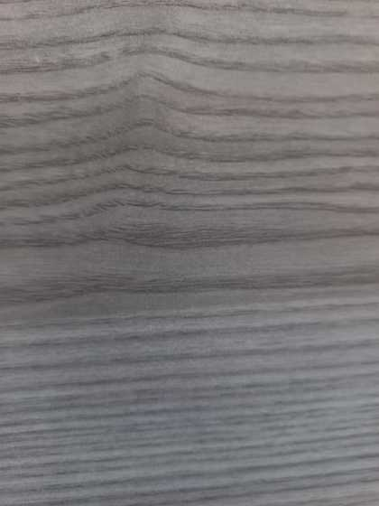
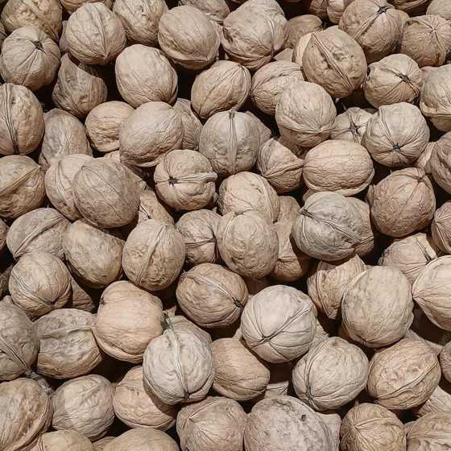
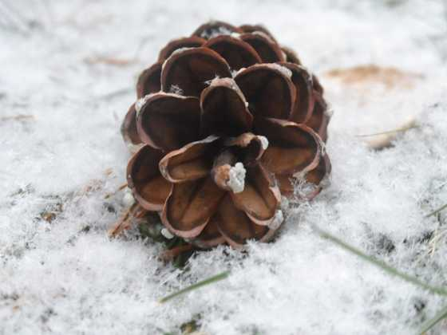
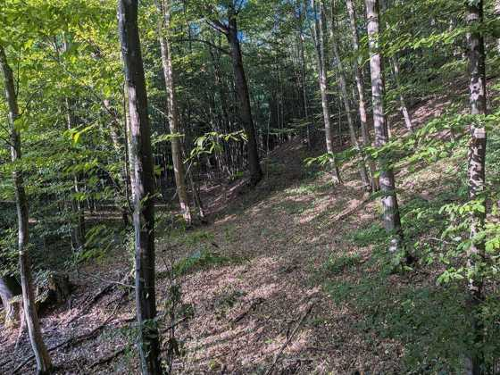
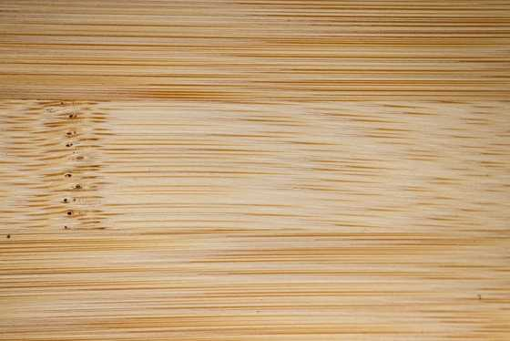
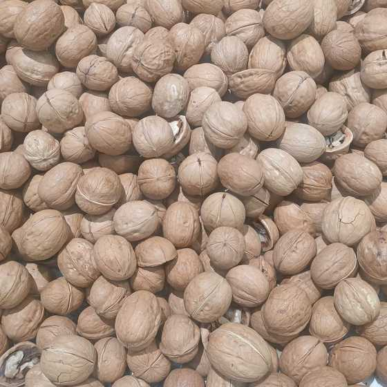
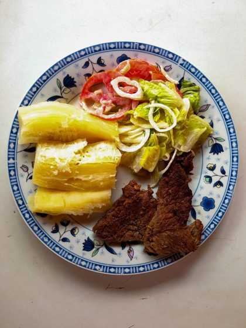
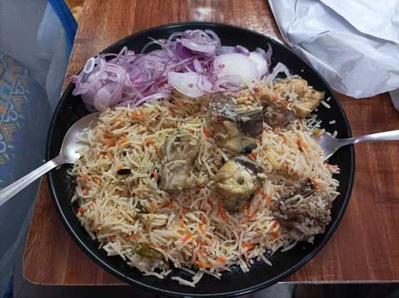
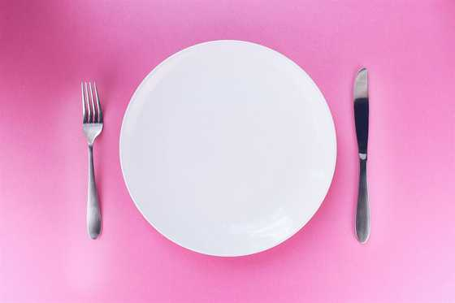
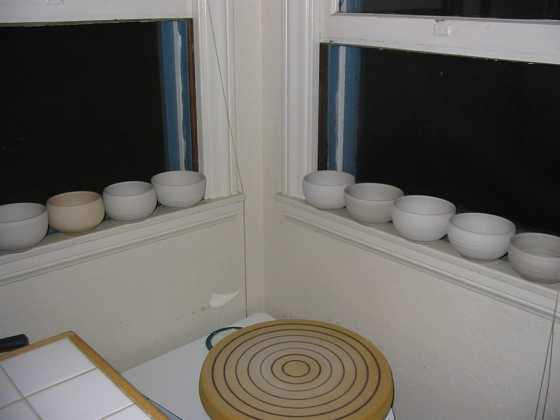

こけしの実
木の実のようにちいさく、
ひと膳のお昼ごはんをていねいに。
大分県豊後高田市玉津

お店について
「こけしの実」は、大分県豊後高田市玉津にある飲食店です。Instagramでは「本日のランチ」として、ごはんやお汁などのお昼ごはんが紹介されています。
店名の意味やお店ができた経緯は、公開されている情報からは確認できませんでした。このページの「木の実のようにちいさく」という言葉は、店名から受けた制作側のイメージで、お店の公式な理念ではありません。
準備中 お店の想い・こだわりは、オーナー様からうかがった内容に差し替えます。







掲載している写真はフリー素材のイメージです。店舗の実際の様子・料理ではありません。他の地域・海外で撮影されたものや、撮影地が不明なものを含みます。
メニュー






口コミ
以下は制作側が作成したイメージ例です。実際のお客様の声ではありません。
イメージ例
お昼にゆっくりできて、ごはんとお汁にほっとしました。
イメージ例
お店の雰囲気が落ち着いていて、また寄りたくなります。
イメージ例
季節を感じる一膳でした。友人にも教えたいです。
写真クレジット
掲載写真はクリエイティブ・コモンズ等のライセンスによるフリー素材です(ライセンスについては https://creativecommons.org/ をご覧ください)。縮小・切り抜きなどの加工をしています。出典はすべて Wikimedia Commons です。
- 木のテーブル: T mab26 / CC BY 4.0 / 出典
- 食卓の皿とカトラリー: Stock Catalog / CC BY 2.0 / 出典
- 陶器の器: quinn norton / CC BY 2.0 / 出典
- 木の実と丸太: Baileynorwood / CC0 / 出典
- くるみ(1): Fumikas Sagisavas / CC0 / 出典
- くるみ(2): Fumikas Sagisavas / CC0 / 出典
- 松ぼっくり: MarkBuckawicki / CC0 / 出典
- 木目: Bango Textures / CC0 / 出典
- 茶葉: VickyOmondi / CC0 / 出典
- ハニーディッパー: Matankic / CC0 / 出典
- 木立の小道: Beanbeans424 / CC0 / 出典
- 皿の料理: Muago / CC0 / 出典
- ごはん料理: Haoreima / CC0 / 出典
- トースト: Daderot / CC0 / 出典